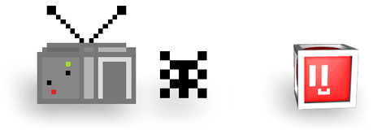

We
leven in het tijdperk van 128-bit en Bit Boy Kubi leidt een rustig leventje
met zijn vrienden. Tot op een dag met een flits een tijdmachine voor zijn
neus materialiseert. De deur opent met een wolk van rook en er komt een
ongelooflijk, afschuwelijk, bizar, afzichtelijk en erg blokkerig monster uit
tevoorschijn.

Het monster brult: "Aha, dus zo ziet de toekomst er uit!" Kubi, op zijn
eigen tamelijk naïeve manier, is niet erg van zijn stuk gebracht door deze
vreemde gebeurtenissen en stelt zichzelf onmiddellijk voor:
 "Hallo,
ik ben Kubi, een Bit Boy. En wie ben jij?" Gezien het uiterlijk van het
monster is het antwoord erg geloofwaardig. "Ik ben een heel boosaardig
monster uit het 4-bit tijdperk". "Wauw, een oudje. Jij bent echt retro!"
antwoordt Kubi met glinsterende ogen.
"Hallo,
ik ben Kubi, een Bit Boy. En wie ben jij?" Gezien het uiterlijk van het
monster is het antwoord erg geloofwaardig. "Ik ben een heel boosaardig
monster uit het 4-bit tijdperk". "Wauw, een oudje. Jij bent echt retro!"
antwoordt Kubi met glinsterende ogen.
Het monster had angst verwacht in plaats van deze opgewekte reactie, dus het wordt woest: "Retro? Noem je MIJ retro? Wie
denk je wel dat je bent om mij retro te noemen?"
deze opgewekte reactie, dus het wordt woest: "Retro? Noem je MIJ retro? Wie
denk je wel dat je bent om mij retro te noemen?"
"Maar retro is tegenwoordig helemaal in,"
antwoordt de overdonderde Kubi, die geen idee heeft waar alle opwinding over
gaat en de woedende hoop pixels in de verste verte niet eng vindt.
Kubi's gebrek aan interesse in de slechtheid van het monster raakt een
gevoelige snaar en het onvermijdelijke gebeurt. Woedend valt het monster,
samen met zijn leger handlangers, de andere weerloze Bit Boys in de buurt
aan en ze ontvoeren ze in hun tijdmachine.
|
 |
Op het moment dat het monster de deur van de tijdmachine met een
clichématige waanzinnige lach wil dichtslaan, kan Kubi nog net in de machine
springen en hij verdwijnt met de anderen in de maalstroom van de tijd.
 |
|
 |
|
Is Kubi in staat al zijn vriendjes te redden
uit het verleden en terug te brengen
naar het heden?
|
We hopen het van harte,
anders komt er geen vervolg op dit spel... |
|